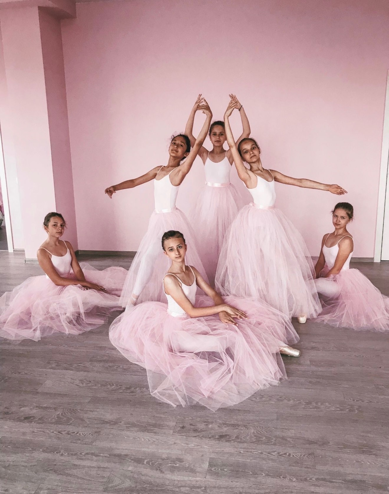
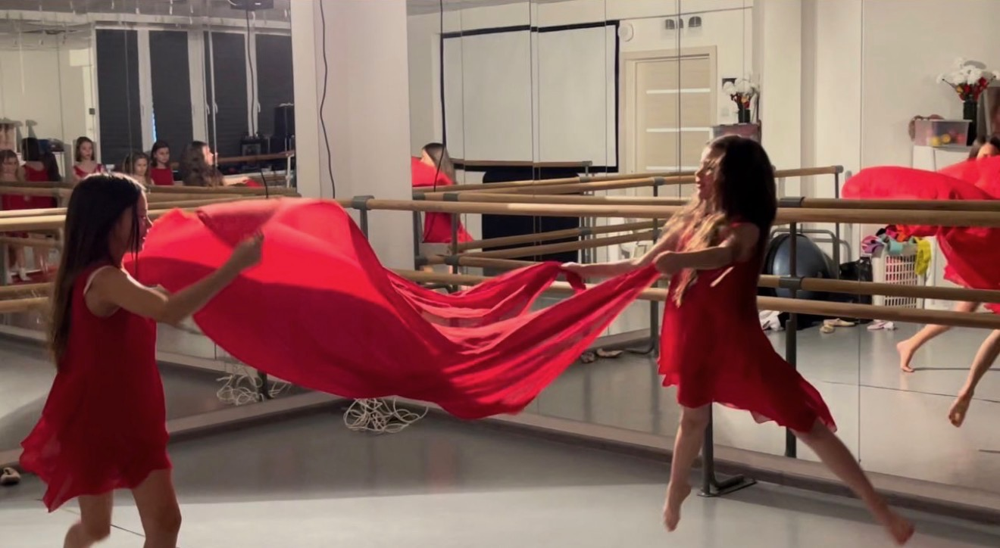

Направления · 8–18 лет
Классический танец для детей 8–18 лет
От первых движений у станка до сцены и собственного танцевального опыта.
Классический танец — одно из основных направлений Детского театра балета «Эльф». На занятиях дети изучают основы балетной техники, работают у станка и на середине зала, постепенно переходят к более сложным движениям, вариациям и сценической практике.
- Возраст: 8–18 лет
- Продолжительность занятия: 110 минут с перерывом
- Пробные занятия бесплатно
Классический танец — основа балета
Классический танец знакомит ребёнка с языком балета — его движениями, позициями и принципами исполнения.
На занятиях дети постепенно осваивают постановку корпуса, положения рук и ног, координацию, движения у станка и на середине зала.
По мере подготовки программа становится сложнее, а отдельные элементы соединяются в танцевальные комбинации и вариации.

Как проходят занятия
Одно занятие длится 110 минут с перерывом.
Работа начинается с упражнений, которые помогают подготовить ребёнка к основной части урока. Затем дети занимаются у станка и на середине зала, осваивают новые движения и повторяют уже знакомые элементы.
С возрастом и уровнем подготовки комбинации становятся сложнее и требуют всё большей точности, музыкальности и координации.
Задача педагога — двигаться постепенно: от правильного выполнения отдельных элементов к свободному и выразительному танцу.
От основы к сценическому танцу
Классический танец в «Эльфе» не заканчивается упражнениями в зале.
По мере подготовки дети начинают разучивать танцевальные комбинации и вариации, а полученные на занятиях навыки становятся основой сценической работы.
Класс помогает освоить технику, а сцена учит применять её в настоящем танце — вместе с музыкой, образом и взаимодействием с другими исполнителями.
Когда начинаются занятия на пальцах
Пальцевая техника появляется не с первого занятия.
Обычно знакомство с ней начинается примерно с 10 лет, когда ребёнок уже получил необходимую базовую подготовку и педагог видит, что он готов к следующему этапу.
Переход происходит постепенно и зависит не только от возраста, но и от подготовки конкретного ученика.

Сценическая практика
От занятий в зале — к спектаклям
«Эльф» — не только место для занятий классическим танцем, но и Детский театр балета.
По мере подготовки воспитанники участвуют в спектаклях и получают настоящий сценический опыт.
В репертуаре театра — «Щелкунчик», «Спящая красавица», «Жар-птица», «Снежная королева», «Золушка» и другие постановки.
Для ребёнка это возможность увидеть, как упражнения и комбинации, которые он разучивает в классе, постепенно становятся частью настоящего спектакля.
Посмотреть спектакли театра →Можно ли начать заниматься без подготовки
Прийти познакомиться с направлением можно и без предыдущего опыта классического танца.
Возраст сам по себе не говорит о подготовке ребёнка, поэтому перед началом занятий важно познакомиться с педагогом и определить подходящую группу.
Если ребёнок раньше уже занимался хореографией или балетом, педагог также сможет учитывать его предыдущий опыт.
Для знакомства с направлением в «Эльфе» есть бесплатные пробные занятия.
Классический танец для детей и подростков
В направлении занимаются дети и подростки от 8 до 18 лет.
Поэтому содержание занятий меняется вместе с возрастом и подготовкой: от освоения базы классического танца до более сложной техники, вариаций и сценической работы.
Для старших воспитанников классический танец становится уже не просто знакомством с балетом, а системной работой над техникой и исполнением.
Пробное занятие
Пробное занятие
Пробное занятие позволяет познакомиться с педагогом, увидеть, как проходит класс, и понять, подходит ли ребёнку это направление.
Если ребёнок ранее не занимался классическим танцем, не нужно заранее осваивать какие-либо специальные упражнения.
Если опыт уже есть, об этом можно рассказать педагогу перед началом занятия.
Пробные занятия в «Эльфе» бесплатны.
Москва
Балет для детей у метро Проспект Вернадского
ул. Удальцова, 17 к. 1метро Проспект Вернадского
Чтобы узнать о подходящей группе и договориться о пробном занятии, позвоните нам:
+7 905 513-53-11 Позвонить и записатьсяНаправления
Продолжить обучение в «Эльфе»
Другие направления Детского театра балета «Эльф».

3,5–7 лет
Хореография для детей
Смотреть направление →
8–18 лет
Пластика
Смотреть направление →
3–18 лет
Театральная студия
Смотреть направление →Направления можно посещать отдельно или совмещать.